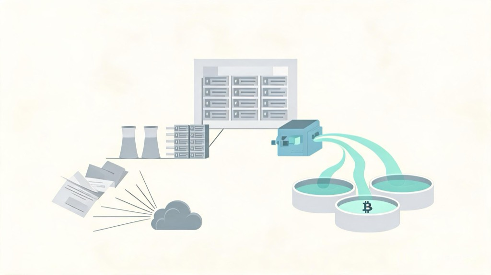

Hayes 把 AI 焦虑推向 credit 语言
AI bubble 以前，市场更多是在问 equity 问题：AI 股票贵不贵，earnings 能不能追上，capex 会不会压低利润率。Hayes 在 Situationship 里换了一个角度。他没有沿着普通的 2000-style earnings story 往下讲，而是把注意力放到 credit-financed infrastructure cycle 上，甚至推到 2008-style credit story，并给出 BTC 到 $1 million 的预测。
我不会把这个价格目标当结论。我从这篇里拿到的只是一个观察对象：AI boom 如果从估值泡沫讨论继续滑向信用周期讨论，交易者可能会把 BTC 重新放进一个 liquidity response trade 里。这个判断现在只能是条件式的。BTC 在这里不是 AI 受益股，也不是算力需求的直接映射；它更像市场押未来 policy liquidity 时可能愿意买的 high beta 表达。
我现在能核查到的边界也比较清楚：AI 基建支出和融资证据已经足够明显，credit-cycle 说法有了观察对象；但 AI credit stress 已经造成 broad financial accident，或者未来 liquidity 一定流向 BTC，这两件事现有资料还撑不住。下面我只沿着这条窄线看：支出和融资是否已经变成市场要盯的对象，以及 BTC 为什么会被一部分交易者拉进这个 liquidity 叙事。
AI 基建已经进入 capex 和 financing 项
这条线值得跟踪，是因为 AI 不再只是 software revenue 的想象，也越来越像看得见、借得到、压得上资产负债表的东西。市场盯到的具体物体包括 data centers、technical infrastructure、servers、networks、cooling、power、grid connections。它们不轻，也不便宜。
BloombergNEF 估计，最大上市 data-center 公司 2026 年 capex 接近 $750 billion；截至 2025 年 9 月下旬，全球 831 个站点有 23.1GW data-center IT capacity 在建。这些数字不能证明系统性压力已经发生。它们能说明的是：AI 已经足够 physical，足够 capex-heavy，足够让投资人把它当成 macro financing theme，而不只是 tech multiple theme。
Alphabet 是一个干净例子。它的 Q2 2026 10-Q 显示，季度 capex 为 $44.9 billion，2026 上半年 capex 为 $80.6 billion，主要投向 technical infrastructure。另一份 SEC / Alphabet financing exhibit 披露，公司从股票和 mandatory convertible preferred 发行获得 $49.6 billion net proceeds，用于 general corporate purposes，包括 AI infrastructure 和 global compute。
我不会把这一步说成 Alphabet 现金流不够，或者 Alphabet 财务紧张。资料没有证明这个动机。能放在台面上的只是：AI 已经进入 capex 和 financing item，市场自然会问，这些钱最后由谁承接。
BIS 也把 AI boom 描述成从 cash flows 走向 debt 的融资变化，并提醒 debt-related vulnerabilities。Goldman Sachs 讨论 data center financing 时，也把问题放到 markets、structures、currencies 和 private markets 上，认为 private markets 会在 data center financing 里扮演更大角色。我会把结论收得更窄：AI 基建融资正在变宽，开始碰到 credit market 的承载能力。
BTC 进场靠 liquidity 逻辑
如果 AI bubble anxiety 只停在 tech equity expensive，BTC 没有天然位置。贵的 AI 股票可以跌，便宜的 AI 股票可以涨，这和 BTC 本身没有直接关系。
BTC 进入这条线，是因为叙事从估值变成了融资。一旦问题变成 AI infrastructure financing 会不会需要更宽的 credit market 承接，市场下一步就可能开始想 backstop、policy support、liquidity response。BTC 交易者熟悉这个语言。
关于 Bitcoin 与央行的研究 把 BTC 描述为对 central-bank signaling 和 monetary-policy expectations 敏感的 barometer；CF Benchmarks 也支持 liquidity 对 BTC 有解释力，同时明确提醒 M2-Bitcoin relationship 会偏离，不能机械化。我的读法会收紧到这里：交易者可能把 BTC 当成 liquidity 和 policy expectations 的 high-beta 表达。不是 M2 上升，BTC 必涨，也不是 AI 建 data center，BTC 受益。

AI credit stress 到 BTC upside，中间隔着好几步，每一步都可能断。比较完整的链条是：AI financing stress 变得重要，市场开始预期 policy support 或 backstop，这种支持创造或暗示 liquidity，risk assets 重新定价，BTC 捕捉其中一部分 repricing。
Hayes 的版本传播力强，是因为他把这条链讲得很顺。但独立资料主要能撑住前半段：AI 基建确实越来越像 capex 和 financing 问题。后半段仍然是 inference。
现在没有来源证明 AI credit 已经造成 broad financial accident。也没有来源证明，如果 rescue liquidity 出现，它一定流向 BTC，而不是 Treasuries、bank reserves、gold、mega-cap equities 或 stablecoin ecosystems。
这也是我会继续盯住的边界。它不能压缩成 AI 出事，所以 BTC 涨。更窄的版本是：如果 AI 泡沫焦虑从 valuation problem 变成 credit-cycle problem，BTC 交易者会开始看未来 policy liquidity，而不是只看 AI 股票本身。
交易重点在顺序和信号
市场很容易把这条叙事误读成 safe-haven trade。BTC 在这里不是可靠 safe haven。Kansas City Fed 的研究发现，Bitcoin 更像 risk asset，而不是稳定避险资产。IMF 也指出，在 turbulence 中，crypto assets 可能与 equities、VIX、gold 变得更 interconnected。
sequencing 比口号重要。如果 AI credit stress 先打到 risk appetite，而 policy support 还没出现，BTC 很可能跟着 risk assets 一起跌。liquidity thesis 后面可能成立，但第一段价格路径可以非常难受。
所以 Hayes 式 BTC bull case 我会当成一个条件句来读：如果市场开始押救助流动性，BTC 可能成为其中一个高 beta 表达。它不是 AI crash hedge。这两个版本看起来只差一句话，交易结果完全不同。
这条线对我有用的地方，是把后面要观察的信号摆得更具体：hyperscaler 和 data-center 公司的 capex guidance 有没有继续上修；external financing commitments、mandatory convertible、debt、private credit 和 broader financing-market language 有没有继续增加；credit/private-credit 压力有没有从讨论变成价格和条款变化；policy backstop language 有没有开始围绕 AI infrastructure、power、data centers 或 broader financing conditions 出现；BTC 对 AI-credit 和 policy-liquidity news 的反应，是否开始强过它对普通 crypto liquidity 的反应。
BIS 也给了一个重要限制：它提醒 debt vulnerabilities，但同时提到 AI investment 约为 US GDP 的 1%，规模类似 US shale boom，小于 1990s dot-com IT investment increase。也就是说，2008-scale 说法还需要更多证据，不能从 Hayes 的框架直接跳过去。
所以这条 thesis 既不是 AI bubble 利多 BTC，也不是 AI bubble 利空 BTC。我现在更愿意把它看成一个条件变化：AI bubble anxiety 如果继续从 tech valuation problem 转向 credit-cycle and rescue-liquidity problem，BTC trader 看的就不只是 AI equity multiple，而是 capex、financing、credit stress 和 policy liquidity 的顺序。